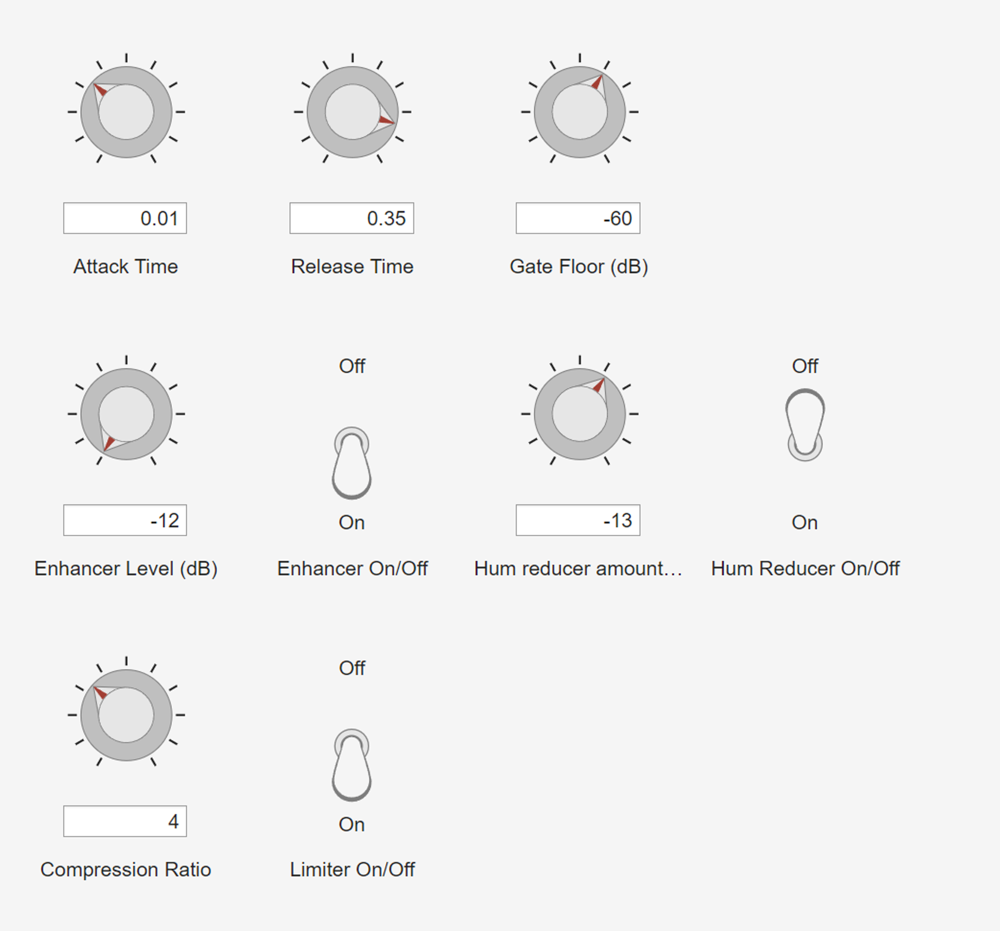
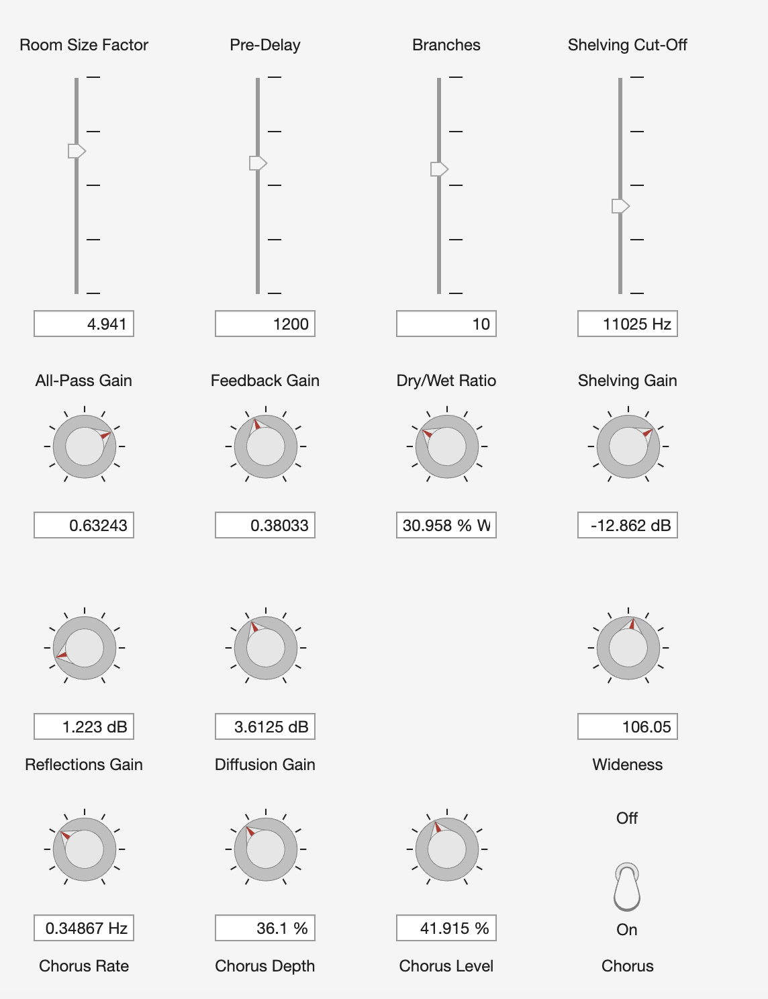
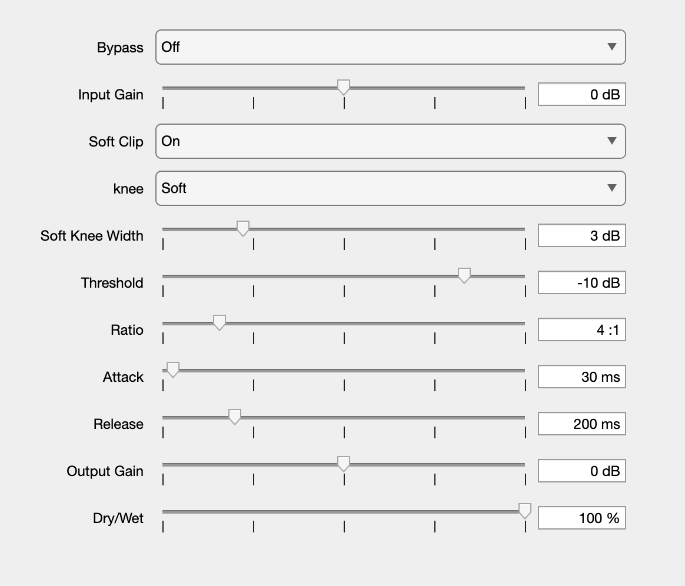

Award Winning Audio Plugins
A collection of VST plugins developed for the AES MATLAB Hackathons, including a compressor, reverb, and a vocal processor.
Suite Talk
Challenge: AES MATLAB Hackathon 2025
In 28 hours, develop a VST in MATLAB that helps podcasters achieve a professional sound quality, while removing background noise. Combine Voice Activity Detection (VAD), A.I. and traditional DSP to provide a quality audio output with an easy-to-use interface.
Solution: Suite Talk – Gold Prize Winner
- A.I. Speech Enhancement – Remove non-speech noise using MetricGAN model
- VAD / Gate – Detect speech in a signal, and open a noise gate so extraneous noise is reduced
- Dynamic EQ and hum reducer – Reduce 60Hz hum and handle common speech EQ in the background
Chorus Verb
Challenge: AES MATLAB Hackathon 2024
Complete a reverb plugin using provided helper filters (comb, all-pass, high shelving) and block diagrams. The first challenge was to finish the main processing block.
Solution: Chorus Verb – First Place Winner
- Chorus Effect – Adds modulation and depth to the reverb tail
- Haas Effect (Wideness) – Creates a wider stereo image
- Reflection Control – Increases signal of reflections/diffusions for better decay control
The final challenge was to measure the performance of the reverb plugin, including some preset designs.
After completing the challenge, the plugin was calibrated by measuring the RT60 of the impulse response and creating a lookup table for the decay time.
V-Kn Comp
Challenge: AES MATLAB Hackathon 2023
Implement a dynamics compressor plugin.
Solution: V-Kn Comp – First Place Winner
- Variable knee compression – Smooth transition between uncompressed and compressed signals
- Input/Output gain staging – Precise level control
- Saturation module – Adds harmonic character
- Real-time metering – Visual feedback for gain reduction